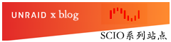

“耕者有其田”已是过去式，“学者有其源”才是新时代的我们，应当追求的，应当努力实现的！
SCIO系列站点守则
一、SCIO系列站点（简称“系列站点”）是个实验性质的项目，此为个人场所，而非公共领域。
二、系列站点由数个子站组成，其中子站由其辖内的子项目构成，项目不断发展，随时会变更。
三、系列站点灵感源于SE Lain、封图源于fauux，其他素材亦为官方/社区创作，简易处理而成。
四、系列站点所有设计均只考虑PC用户，请用电脑浏览，并善用浏览器的缩放功能，保护眼睛。
五、系列站点没有更新推送机制，您需要自行探索；我个人没有邮箱外的沟通方式，注意甄别。
子站
主要项目

其他项目

封闭/本地项目
关于我的简要说明
名字：我的互联网生涯以“时代”为分界，详可见WIKI首页的贴图，圣王H、holykingh；废渣（1/2/3号）；SCIO；宋文和。它们都是我，你可以根据与我相识的时代/场景选择如何称谓我。
风格：总的来说，我喜欢写东西，以至于经常长篇大论一些于第三者来说无关紧要的内容，你可以理解为“絮絮叨叨”、“啰里啰唆”或“书写狂”（graphomania）。
朋友：在社交上，我几乎不会“主动出击”，我能做到的最大的努力就是“在社区中发帖”。不是因为高冷，而是我不敢贸然打扰具体的人。如果您也是这样，那我们可能会擦肩而过，您可以随时向我发送邮件，毕竟我不日理万机，除了广告推送、更新通知外，很少收到邮件，很少与人交流……
关于SCIO系列站点的简要说明
主旨：我给系列站点的题词便是页面顶部那句慷慨激昂的宣言，但那是我的期望，而非我要做的。我的实力与水平着实微薄。
发展：系列站点本身也起源于一个微小的念头，我也不知道它会发展成什么样，但是我会尽量完善更多的东西。
联系我
如果你是个普通人：songwenheh#gmail.com
如果你也比较个性化：scio#scio.icu
如果你是偏执狂，但只偏执一点点：scio#disroot.org（尽量使用：我的PGP公钥）
如果你有被害妄想症，反对一切主流：holykingh#cock.li
如果你是极端派，但只极端一点点：ocini#dnmx.org
如果你是狂热分子，搞得像在密谋什么一样：scio#riseup.net（尽量使用：我的PGP公钥）
请发信至gmail、scio-mail、disroot、riseup中的任意一个，另外两个几乎不会检查。以及注意将“#”转换为“@”。
重要更新记录
2023.07.16：对主站内容进行调整，优化了文字描述。
2023.05.15：对主站内容进行调整，将友链移植新页面。
2023.04.27：对主站内容较大篇幅改动、增删Webrings。
2023.02.09：对主站内容重写、增添Webrings制度。
2022.05.18：由于027代小狗去世，自2022.05.01以来主页为悼念页，现因结构整改，暂取消此项计划，并永久保留悼念页，聊以慰藉
2022.05.18：对网站构造进行了完全重改，旧构造见：SCIO博客章程 、当前内容填充情况速览及更新日志（注：所举的数据除结构有所更改外，均生效，最新结构请到博客或wiki的具体栏目查看）